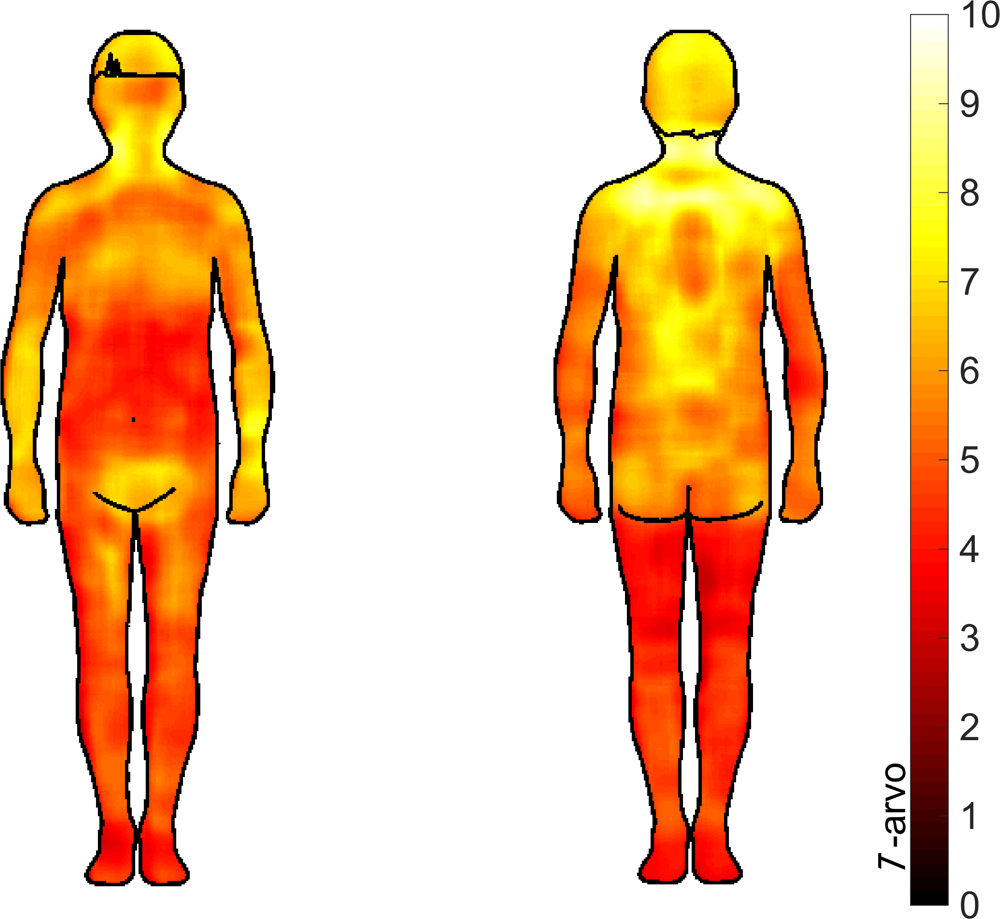

Uncle Mikko's rules to just getting it done
Or how I managed to write the compilation part of my doctoral thesis in under three months even though I'm not a great writer.
Please note that the advice below is specifically tailored for Finnish style thesis by publication, where the meat of your thesis consists of 3-6 papers and the thesis itself is just around 15 000 words tying it all together.
It took me about two and a half months from when I started writing my thesis to sending it off to pre-examination. That's quite a short timeline (I often hear people taking six months or more), and during that time I also attended two conferences, did two trips abroad, and finalised two manuscripts that I needed to include in my thesis. Moreover, my thesis got the grade 'pass with distinction', which is the highest grade your thesis can get in Aalto. This is an exceptionally short timeline and a pretty decent end result. How did this happen?
None of this is because I'm a particularly good writer or because writing is easy to me. Quite the opposite. I constantly struggle with writing and I have been working really hard to get to a solidly mediocre level with my writing. The main reason for my relatively speedy writing process was because I followed my Uncle Mikko's set of rules for writing the compilation part.
My Uncle Mikko is a Doctor of Medical Science and a docent at the University of Helsinki. He's one of the smartest people I know and one of the very few whose advice I've learned not to question because if he says he knows something, then he really knows that thing. So when I asked for advice on how to tackle the dreaded writing up phase of my thesis, I got the following two bits of advice:
He was the one to suggest to me that 2 months should be sufficient for getting from first word on page to ready for pre-examination. As I mentioned in the beginning, it took me around 2,5 months, but I did do quite a bit of other stuff during that time. If I'd managed to plan my schedule (wrt e.g. conference participation and trips abroad) a bit better, I think I could've made it in under 2 months. Uncle Mikko suggested dividing the two months into chunks as follows:
Before beginning
Because you have so little time, you want to go into the battle prepared. Before your first intense writing period you need to prep a bit to make sure you can hit the ground running. Most of this stuff can be done in little pockets of time and some (like thinking about the structure) actually benefits from you pondering about it over time.
The very first thing you'll want to do is to gather up recently completed dissertations from your department. 5-10 should be plenty. Then, go over each with some kind of a word counting program to see how theses from your department tend to be structured and how many words, on average, people have in their introduction, background, summaries of the studies, and discussion (or whatever sections are common in your field). This lets you know how much space you have for each bit of your own text.
I was lucky in that my colleague Enrico had done this for himself and was kind enough to share his calculations with me. I only had to look at the three-ish theses that were published after Enrico's defense.
Now that you know what types of sections are typical, start thinking about the structure of your compilation. Think on the section and subsection level about what you need to include and how much space you can give to each section. At the end of this exercise you should have a table of contents that you can share with your supervisor and an additional document for yourself which outlines how many words each section contains. If at all possible, it's a great idea to get your supervising professor to agree to the structure before you start writing since this can save you a lot of trouble later on.
Finally, before you begin, you want to make sure you have all of the references you need. This was the part of Uncle Mikko's rules was the most surprising to me personally, but proved to be really helpful. What I recommend that you do is that you take your favorite reference management system (please tell me you use one!) and create folders that correspond to the sections in your compilation part. Then you spend one afternoon going over the references you already have and adding them to the relevant folders. Once you have gone through all of your references, you take a look at each folder and see which ones need more sources given the amount of text you expect to have in that section. Then you spend another afternoon with google scholar, collecting more sources to the sections you think need them. I also learned from Uncle Mikko that at least in the medical faculty at the University of Helsinki they care about the age of your references, so try to have at least ten-ish percent of your references from the past two-three years to show that you are up to date with the field.
The process
Weeks 1-2According to Uncle Mikko, you should be able to churn out a full rough draft of your compilation in two weeks. That sounds a bit crazy, but I can attest to it being possible if not always pleasant. At least for me this was the most stressful phase, so you might want to let people know that you'll be a bit grumpier than usual. I wrote "Juulia writing thesis and acting like a jerk" in our family calendar for the whole two weeks.
My approach to getting a full draft in two weeks was to divide the number of words I needed to produce (15 000) by the number of days (10) to give myself a target word count. Then, each day I would finish for the day once I'd hit that 1500 words (give or take a dozen). Some days I was done by 3pm, some days I was done around 11pm. If I recall correctly I managed to take at least one full day off both weekends and I would take some time on the other day to make up for any missing words from the total word count.
I started by writing whatever felt easiest at the moment. When I hit a wall in one part of the text (e.g. discussion) I would jump to something completely different (summaries of studies were always a pretty safe bet). I used Scrivener on my Mac and can warmly recommend it, but feel free to use whatever program you want that allows you to track word count.
The reason why you needed to look through and organise your references before starting is that you're strictly not supposed to search for any new sources during these two weeks. When you come to a point where you know you need another source you currently don't have you can just write that down in your text ("Insert one sentence about conduction velocities of alpha and c fibers here, find citation!!") and move on. Same for any new figures you might need to make. Put down a placeholder ("Insert XX fig in black and white here") and keep writing. This can feel a bit weird but it works wonders to inhibit "productive procrastination" where you give yourself permission to not do what you were supposed to do (writing) because you're doing something "useful".
Week 3
You made it! You have a mostly complete, probably rather rough draft all done. Good job you! Now you just need to polish it a bit. Take this week to fix any "insert XXX here" placeholders and find the missing references / draw the missing figures / format the missing tables. Give yourself the permission not to write new text this week.
Weeks 4-5
Now that you've spent a week away from writing, you can hopefully see your text a bit more objectively. Use these two weeks to polish your text from a very rough draft to a reasonably clean, logical draft that you wouldn't mind sharing with other people.
Week 6
Send your thesis to your supervisor for comments. You're probably pretty exhausted by now, so try to also take a day or two this week to do something nice and relax. You're almost done!
Weeks 7-8
Incorporate any feedback from your supervisor and polish your text. This is also where you would send your thesis for proof reading if that's something you want to do. Your text might still feel very rough to you, especially if you're used to dozens of revision rounds with collaborators on journal manuscripts. I certainly felt that way! But in the words of Uncle Mikko: It's better to have a finished thesis than a perfect thesis. You might even surprise yourself. When I re-opened my thesis after the pre-examination to get ready for my defense, I was shocked to see that the text, which I remembered being in total shambles, was actually quite legible.
Paijaamisen lyhyt oppimäärä
Miksi
Olemme biologisesti virittyneitä koskettamaan toisiamme. Kosketettavana oleminen voi tuntua todella kivalta (Triscoli et al. 2017). Myös koskettaminen voi olla miellyttävää (Triscoli et al. 2017), etenkin koska subjektiivisesti arvioiden toisten iho tuntuu pehmeämmältä ja miellyttävämmältä koskettaa kuin oma ihomme (Guest et al., 2009; Gentsch et al., 2015).Sosiaalisella koskettamisella on myös paljon positiivisia vaikutuksia. Kosketus voi vaikuttaa sosiaalisiin suhteisiimme sekä psyykkiseen ja fyysiseen hyvinvointiimme (Jakubiak & Feeney, 2016). Arjessa saatujen halausten määrä on yhteydessä parempaan immuunipuolustukseen (Cohen et al., 2015) ja kosketus voi lieventää fysiologista reaktiota akuuttiin stressiin. Esimerkiksi, jos pitää pitää jännittävä puhe, ennen tilaisuutta läheisen ihmisen kädestä kiinni pitäminen lieventää fysiologisia stressireaktiota (Ditzen et al. 2007).
Ainakin romanttisissa parisuhteissa kosketus voi kertoa meille suhteen tilasta (Kontula, 2016) ja kosketus voi myös vaikuttaa suhdetta lähentävästi (Floyd et al., 2009). On erittäin todennäköistä, että tämä on totta myös muissa ihmissuhteissa, mutta tutkimusnäyttö parisuhteiden ulkopuolella on vähäisempää (Suvilehto, 2018).
Miten
Hyvät uutiset: todennäköisesti osaat jo paijata juuri oikein. Vaikka yksilöiden välistä vaihtelua onkin, keskimäärin miellyttävimmäksi kosketukseksi arvioidaan pehmeä, rauhallinen (n 1-10 cm/s) paijaaminen (Croy et al. 2015; Sehlstedt et al., 2016). Tämä on juuri se nopeus, jolla ihmiset spontaanisti paijaavat toista ihmistä (Croy et al. 2015).
Mikäli olet epävarma, voit pyytää paijattavalta ohjeita hänelle sopivasta paijaamisesta. Haluaako hän sitä nopeammin, hitaammin, pehmeämmin, jollain muulla tavalla?
Mitä
Melkein kaikkien alueiden kosketus voi tuntua miellyttävältä. Suuri osa ihmisistä pitää erityisesti selän paijaamista miellyttävänä (Walker et al., 2017), mutta myös käsivarsien ja pään alueen koskettaminen koetaan keskimäärin miellyttävänä (Suvilehto et al., 2015). Jos teet paijausvaihtokauppaa vaikka kaverin kanssa, on hyvä reilusti ilmaista mihin toivot itseäsi kosketettavan.
Ota myös huomioon, että paijaajan ja paijattavan välinen suhde vaikuttaa siihen, mille alueille ja millainen koskettaminen tuntuu luontevalta ja mukavalta. Yllä mainituista alueista, joilla koskettaminen tuntuu erityisen hyvältä, käsivarret ovat se alue, joihin koskettaminen on vähiten rajattu vain läheisimpiin ihmisiin (tämän jälkeen yläselkä, sitten pää ja viimeisenä alaselkä, Suvilehto et al., 2015). Käsivarren tai yläselän paijaaminen voi siis olla sopivan neutraali lähtötilanne.

Kehon kartta alueista, joiden koskettaminen koetaan miellyttävänä. Mitä vaaleampi väri, sitä useampi vastaajista (N = 76) raportoi nauttivansa kosketuksesta tälle alueelle. (Lähde: Suvilehto et al., 2015)
Yleisesti ottaen paijaamisen tulkitaan viestittävän tykkäämistä ja läheisyyttä (Kirsch et al., 2017). Tämä saattaa vaikuttaa siihen, että joissain ihmissuhteissa paijaaminen ei ole toivottua, esimerkiksi jos on mahdollista että jompikumpi osapuoli tulkitsee tilanteen romanttis- tai seksuaalissävytteiseksi. On myös ihmisiä, jotka eivät pidä kosketettavana olemisesta. Varmistathan siis etukäteen, että paijauskaverisi on mielellään mukana paijausvaihdossa. Jos sinun on vaikea löytää lähipiiristäsi sopivaa paijaajaa, voit myös harkita hierojalla käymistä. Tutkimusten mukaan hieronnassa käynti voi antaa samanlaisia hyötyjä kuin paijattavana oleminen (Field, 2011).
Lopuksi
Mikäli paijaamisteema kiinnostaa, voit tulla kuulemaan lisää väitöstilaisuuteeni to 15.11. kello 12 alkaen Lumituuli-salissa (Dipoli, Espoo) tai arvoisan vastaväittäjäni Francis McGlonen esitykseen pe 16.11. kello 12.30 huoneessa U135a (“Nokia”) (Otakaari 1, Espoo). Kiitos Hannu Jakkolalle avusta tämän tekstin kanssa.
Lähteet
Croy I, Luong A, Triscoli C, Hofmann E, Olausson H, Sailer U. 2015 Interpersonal stroking touch is targeted to C tactile afferent activation. Behav. Brain Res. 297, 37–40. (doi:10.1016/j.bbr.2015.09.038)Ditzen B, Neumann ID, Bodenmann G, von Dawans B, Turner RA, Ehlert U, Heinrichs M. 2007 Effects of different kinds of couple interaction on cortisol and heart rate responses to stress in women. Psychoneuroendocrinology 32, 565–574. (doi:10.1016/j.psyneuen.2007.03.011)
Field T. 2011 Touch for socioemotional and physical well-being: A review. Dev. Rev. 30, 367–383. (doi:10.1016/j.dr.2011.01.001)
Floyd K, Boren JP, Hannawa AF, Hesse C, McEwan B, Veksler AE. 2009 Kissing in marital and cohabiting relationships: Effects on blood lipids, stress, and relationship satisfaction. West. J. Commun. 73, 113–133. (doi:10.1080/10570310902856071)
Jakubiak BK, Feeney BC. 2016 Affectionate touch to promote relational, psychological, and physical well-being in adulthood: a theoretical model and review of the research. Personal. Soc. Psychol. Rev. 21, 228–252. (doi:10.1177/1088868316650307)
Kirsch LP, Krahé C, Blom N, Crucianelli L, Moro V, Jenkinson PM, Fotopoulou A. 2017 Reading the mind in the touch: neurophysiological specificity in the communication of emotions by touch. Neuropsychologia (doi:10.1016/j.neuropsychologia.2017.05.024)
Kontula O. 2016 Seksuaalinen hyvinvointi parisuhdeonnen avaimena. Saatavilla http://www.vaestoliitto.fi/@Bin/6081349/Perhebarometri_2016_netti.pdf
Löken LS, Wessberg J, Morrison I, McGlone F, Olausson H. 2009 Coding of pleasant touch by unmyelinated afferents in humans. Nat. Neurosci. 12, 547–8. (doi:10.1038/nn.2312)
Morrison I, Löken LS, Olausson H. 2010 The skin as a social organ. Exp. Brain Res. 204, 305–14. (doi:10.1007/s00221-009-2007-y)
Sehlstedt I, Ignell H, Backlund Wasling H, Ackerley R, Olausson H, Croy I. 2016 Gentle touch perception across the lifespan. Psychol. Aging 31(2), 176. (doi:10.1037/pag0000074)
Suvilehto JT. 2018 Maintaining social bonds via touching: A cross-cultural study. Aalto University publication series DOCTORAL DISSERTATIONS, 210/2018.
Suvilehto JT, Glerean E, Dunbar RIM, Hari R, Nummenmaa L. 2015 Topography of social touching depends on emotional bonds between humans. Proc. Natl. Acad. Sci. U. S. A. 112. (doi:10.1073/pnas.1519231112/)
Vallbo Å, Olausson H, Wessberg J, Norrsell U. 1993 A system of unmyelinated afferents for innocuous mechanoreception in the human skin. Brain Res. 628, 301–304. (doi:10.1016/0006-8993(93)90968-S)
Kannattaako väitöskirjan tekeminen?
Luet tätä tekstiä todennäköisesti siksi, että pohdit, kannattaako väitöskirjan tekeminen. Olen vastannut tähän kysymykseen nyt melko usein ja huomaan neuvojeni olevan aina samat. Koska mikä tahansa on parempaa ajanvietettä kuin artikkelin korjaukset, päätin kirjoittaa muutamat kestovinkkini auki.
Alustuksena: Keväällä 2013 olin tekemässä dippaa kiinnostavassa yrityksessä ja oltiin jo alustavasti puhuttu jatkosta samassa firmassa. Olin välillä pyöritellyt ideaa jatko-opinnoista, mutta en ollut mitenkään erityisen varma, että tutkimuksen teko sopisi mulle eikä mulla ollut yhtään kokemusta tutkimusryhmässä työskentelystä. Tässä tilanteessa oman ainejärjestöni viikkomailiin tupsahti mainos todella tarkasti mun kiinnostukseen vastaavasta väikkäripaikasta EU:n rahoittamassa projektissa, ja pienen pähkäilyn jälkeen päätin hakea sitä. Tulin myös valituksi ja kertaluokkaa pidemmän pähkäilyn jälkeen otin lopulta paikan vastaan. Mulla kävi tosi hyvä tuuri väikkäriprojektin suhteen, mutta se oli enemmän kiinni satumaisen hyvästä tuurista kuin mistään suuresta suunnitelmasta. Ole sinä fiksumpi kuin minä ja käy mielessäsi läpi ainakin allaolevat pointit.
Disclaimer: Nämä näkemykset ovat omiani, ja keskittyvät erityisesti väitöskirjan tekemiseen Suomessa teknillis-luonnontieteelliseltä alalta. Tilanne on huomattavan erilainen ulkomailla (väitöskirjan tekijälle ei välttämättä makseta lainkaan palkkaa ja pahimmassa tapauksessa joudut itse maksamaan siitä ilosta että saat tutkia) ja esimerkiksi humanistisilla aloilla (projektirahoitukset paljon harvinaisempia, monen vuoden rahoituksen vaatiminen etukäteen saattaa olla epärealistista, palkkaero akatemian ja muiden työnantajien välillä ei välttämättä ole yhtä iso kuin tekniikan alalla).
Kannattaako sun edes tehdä väikkäriä?
Jos et ole ihan varma, niin lähtökohtaisesti ehkä ei? Tohtorin paperit ovat välttämättömyys akateemiselle uralle hakeutuessa mutta lähes alalla kuin alalla uusia tohtoreita valmistuu vuosittain huomattavasti (siis todennäköisesti ainakin kymmenkertaisesti Suomen mittakaavassa, epäsuhta on vielä huomattavasti suurempi globaalisti) enemmän kuin virkoja tai tenure-track paikkoja on jaossa. Työllistyminen akatemiassa on postdoc (tutkijatohtori) vaiheeseen asti suhteellisen helppoa, etenkin jos olet valmis muuttamaan työn perässä, mutta professorikuntaan tai staff scientistiksi on vaikea päästä. Akatemian ulkopuolella taas on melko harvoja aloja, joissa tohtorin paperit ovat aidosti pakolliset ja näille aloille pyrkivät usein tietävät tilanteen jo ennen väitöskirjan aloittamista.
Ainakin tekniikan aloilla akatemian puolella palkat ovat myös selvästi pienemmät kuin teollisuudessa. Vaikka esimerkiksi Aallon väitöskirjatyöntekijöiden palkat ovat suomalaisittain ja kansainvälisestikin varsin hyvällä tasolla, on niissä kuitenkin todella suuri ero teollisuuden palkkoihin. Ja vaikka tekniikan tohtorina saattaa saada hieman parempaa aloitusliksaa kuin DI:nä, hattuvakiolla arvioisin, että sillä ei saa kurottua umpeen väitöskirjan ja mahdollisen postdocin aikana kertynyttä kumulatiivista palkkaeroa. (Laskelmat aiheesta tervetulleita! Olen todella ilahtunut jos olen tässä suhteessa väärässä.)
Väitöskirjan tekeminen on myös joko vaikeaa, turhauttavaa tai vaikeaa ja turhauttavaa. En ole koskaan kuullut kenenkään kuvaavan väitöskirjaprosessiaan helpoksi ja kivuttomaksi. Ja vaikka jossain sellaisia ihmelapsia olisikin, on todella pieni todennäköisyys että juuri sinä olisit sellainen (sori!). Takapakkeja tulee kaikessa tutkimuksessa, joko työn toteutuksessa tai viimeistään vertaisarvioinnissa. Jos on tottunut pärjäämään hyvin, voi olla todella vaikeaa siirtyä opiskelumoodista (kerrot opettajalle oikean vastauksen ja heitätte yläfemmat) tutkimismoodiin (ei ole olemassa oikeaa vastausta tai kukaan ei tiedä mikä se on, mutta vertaisarvioija on vuorenvarma että sinun vastauksesi ainakin on väärin). Jos tiedät, että otat kaikki vastoinkäymiset rankasti tai niiden prosessointi on hankalaa, ei tutkimus ehkä ole se paras ala sulle.
Työllisyysnäkymät, palkkaerot ja vastoinkäymiset kuuluu olennaisena osana väitöskirjan tekijän elämään. Jos olet lukenut tänne asti ja olet sitä mieltä, että kuulostavat mielestäsi reilulta vaihtokaupalta todella kiinnostavasta työstä, niin ehkä väitöskirjan tekeminen voikin olla hyvä idea.
Mistä aiheesta ja missä ryhmässä?
Yllä mainittujen lisäksi väitöskirjan tekemiseen liittyy muitakin haasteita. Onneksi näitä voi jossain määrin itsekin kontrolloida. Paikkaa valitessa kannattaa mielestäni kiinnittää huomiota ainakin seuraaviin:
Aihe
Kuten ylempänä jo tuli todettua, väitöskirjan teko ei ole aina helppoa ja hauskaa (vaikka voi se välillä sitäkin olla). Tästä syystä suosittelen erittäin lämpimästi pohtimaan hyvin tarkkaan, onko aihe tai aihepiiri sellainen, jonka kanssa jaksat viettää seuraavat 3-7 vuotta. Tykkäsitkö aihetta liippaavista kursseista joita olet perustutkinnon aikana mahdollisesti käynyt? Jos avaat aihetta käsittelevän lehtijutun tai artikkelin, onko reaktiosi enemmän "ai okei" vai "oho, kuin jännää!"? Jos avaat aiheeseen liittyvän tieteellisen artikkelin (tai vaikka kymmenen), vaikuttaako Introduction ja Discussion osiot kiinnostavilta vai puuduttavilta? Kannattaa myös yrittää hahmottaa sitä, mihin oma aihe sijoittuisi perustutkimus-soveltava tutkimus -akselilla. Tämä voi vaikuttaa mm. siihen, kuinka suuria läpimurtoja aiheessa on tehtävissä, miten vaikeaa jatkorahoitusta on hankkia ja miten hyvin väitöstutkimus valmistaa mahdollisiin akatemian ulkopuolisiin työpaikkoihin. Huomaa myös, että jos sut palkataan johonkin valmiiksi rahoitettuun projektiin, et todennäköisesti pysty hirveän paljon muokkaamaan aihettasi koska raha on annettu nimenomaan tämän aiheen tutkimiseen.
Rahoitus
En suosittele ottamaan vastaan väitöskirjapaikkaa jos sinulle ei voida luvata rahoitusta ainakin kahdeksi vuodeksi (mutta mieluummin neljäksi). Useimmiten tämä toteutuu siten, että sinut palkataan jo rahoitettuun projektiin tai saat harvinaisen tutkijakoulupaikan. Minulla itselläni oli poskettoman hyvä tuuri, ja sain rahoitusta isosta EU-projektista sekä omia apurahoja, eikä minun tarvinnut ensimmäisen kolmen vuoden aikana juurikaan miettiä rahoituskuvioita. Kaikilla ei ole näin hyvin: samaan aikaan väikkäriä tekevä ystäväni on kursinut kasaan väitöskirjansa rahoituksen erilaisista vuoden apurahapätkistä ja tuntiopetuksesta. Olemme usein keskustelleet siitä, kuinka stressaavaa on yrittää keskittyä tutkimukseen kun ei voi olla varma, onko parin kuukauden päästä enää tuloja, joilla maksaa asuntolaina, enkä tiedä olisinko itse jaksanut saattaa väikkäriä loppuun samassa tilanteessa. Esimerkiksi tässä Ylen jutussa mainitaan, että taloudellinen epävarmuus on yksi eniten stressaavista seikoista väitöskirjaa tehdessä ja tiedekin on todistanut, että puute (scarcity) vaikuttaa kognitiiviseen prosessointiin.
Ohjaaja ja ryhmä
Ohjaajat voi karkeasti jakaa erittäin hyviin, vähemmän hyviin, ja aivan järkyttävän huonoihin. Koska ohjaajan valinnalla on suuri vaikutus väikkäriprojektin ja mahdollisen sen jälkeisen akateemisen uran kannalta, kannattaa selvittää mahdollisen tulevan ohjaajan sijoittuminen tälle akselille etukäteen. Erityisen tärkeää on välttää toksisia ohjaajia (esimerkiksi tällaisia), mutta onneksi heitä on vain pieni osa kaikista ohjaajista. Oman onnellisuuden kannalta ja väitöskirjan edistymistä silmällä pitäen, kannattaa myös tiedostaa vähemmän hyvien ohjaajien ominaisuuksia. Erityisesti suosittelen nuuskimaan selville kuinka hyvin kommunikaatio sinun ja mahdollisen ohjaajan välillä toimii, minkälainen ilmapiiri mahdollisessa tutkimusryhmässä on ja helposti ja kuinka usein ohjaaja on tavattavissa. Aallonhuiput (Aallon jatko-opiskelijoiden erityisasemayhdistys) koordinoi muutama vuosi takaperin laajaa kyselyä, jossa selvitettiin jatko-opiskelijoiden tilannetta Suomessa. Etäinen ohjaaja, jonka kanssa tavattiin harvoin, oli yhteydessä huomattavasti venyneisiin valmistumisaikoihin (raportin sivu 7). Tähän saattaa vaikuttaa myös ohjaajan muut mahdolliset velvollisuudet, kuten hallinnolliset tehtävät (laitoksen johtaja, koulutusohjelman johtaja ym.). Harva ohjaaja on täydellinen, joten on myös hyvä tiedostaa ne seikat, jotka itsellesi ovat tärkeitä. Ehkä pärjäät hyvin pienellä ohjauksella mutta et kertakaikkiaan kestä mikromanagerointia. Ehkä sinulle on tärkeää tiivis ryhmä, joka on fyysisesti paikalla labrassa, tai ehkä arvostat enemmän mahdollisuutta päättää vapaasti oman työskentelysi ajan ja paikan. Entä onko potentiaalinen ohjaajasi tiiviisti apuna kirjoitusprojekteissa (joita tulee olemaan paljon) vai oletetaanko sinun tekevän artikkelit alusta loppuun itse? Ota myös huomioon, että moniin kysymyksiin saa totuudenmukaisemman vastauksen potentiaalisen ohjaajasi muilta ohjattavilta kuin ohjaajalta itseltään. Erittäin hyvän ja vähemmän hyvän ohjaajan erottaminen toisistaan on melko vaikeaa, mutta onneksi internet auttaa. Googlaa esimerkiksi "choosing a phd advisor" tai aloita tästä.
Lopuksi
Haluan vielä painottaa, että yllä olevat ovat vain omia suosituksiani. Mikään ei ole kiveen hakattua - ehkä sun on pakko hyväksyä se, että kiinnostavista aiheesta ei ole rahoitettuja paikkoja tarjolla. Tai ehkä sait tarjouksen ryhmästä, jossa kaikki muu on kohdallaan, mutta ohjaaja ei vaikuta erittäin hyvältä. Näissä (kuten kaikissa muissakin) tilanteissa voit toki käyttää omaa harkintaasi ja puntaroida mikä just sulle on tärkeää. Pidä kuitenkin mielessä se, että väikkärin tekeminen on inherentisti aika vaikeaa ja kaikki ylimääräinen stressi on, noh, ylimääräistä stressiä. Tsemppiä pohdintaan ja toivottavasti tästä oli apua!
Kiitos kommenteista Sanja Asikaiselle ja Marja Pitkäselle! Jos huomaat typon tai haluat muuten kommentoida tekstiä, tee se vaikka Twitterissä.